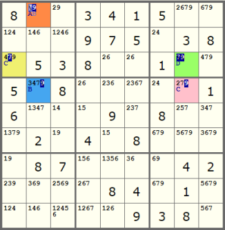

Technique: Nishio
Sudoku Solving Techniques
Nishio
The logic behind Nishio is just like the proof by contradiction method in mathematics. Suppose an undetermined cell is digit "k" say. If this assumption leads to a contradiction, then we can confirm that this assumption is incorrect. As a result this cell cannot be "k" and it can be removed from the cell as a candidate.
Consider the following Sudoku puzzle:

The red cell has two digits 7 and 9 as candidates. Let us suppose that this red cell is 9.
- Step A: Suppose that the red cell is 9.
- Step B: The red cell cannot be 7 (it is 9 already) and the blue cell cannot be 9 (the red cell in the same column is 9).
- Step C: The yellow cell must be 7 (the only cell that can host 7 in its corresponding 3x3 square) and the pink cell must be 9 (the only cell that can host 9 in row 4).
- Step D: The green cell cannot be 7 (the yellow cell in the same row is 7). Also it cannot be 9 neither (the pink cell in the same column is 9).
Now you can see that the green cell has no candidates left and that should not happen in any circumstances. Therefore our assumption that the red cell is 9 is incorrect and it can be safely removed from the red cell as a candidate.